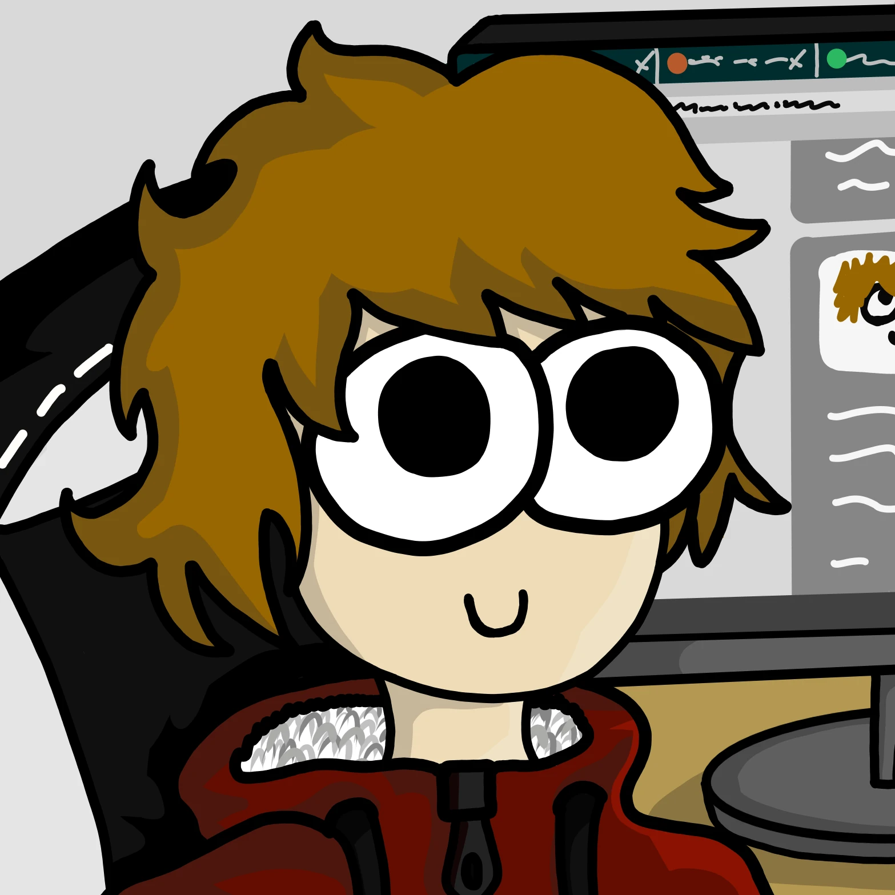
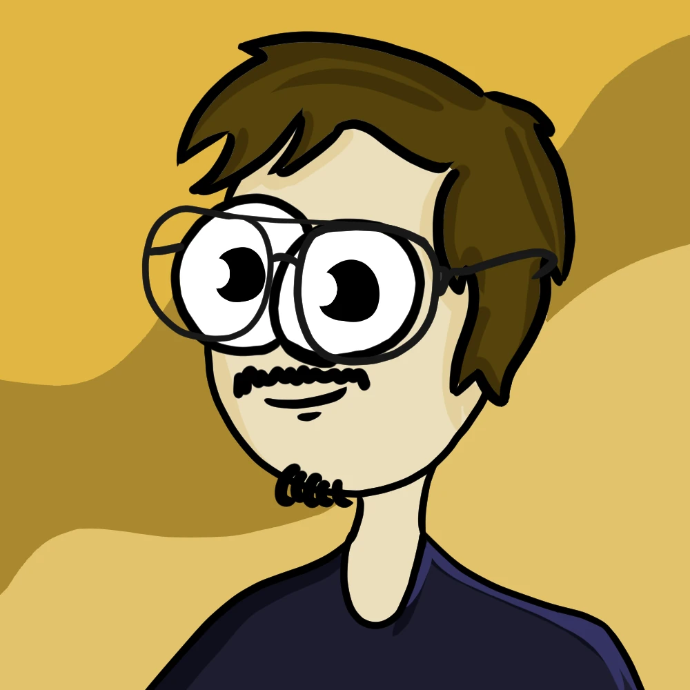
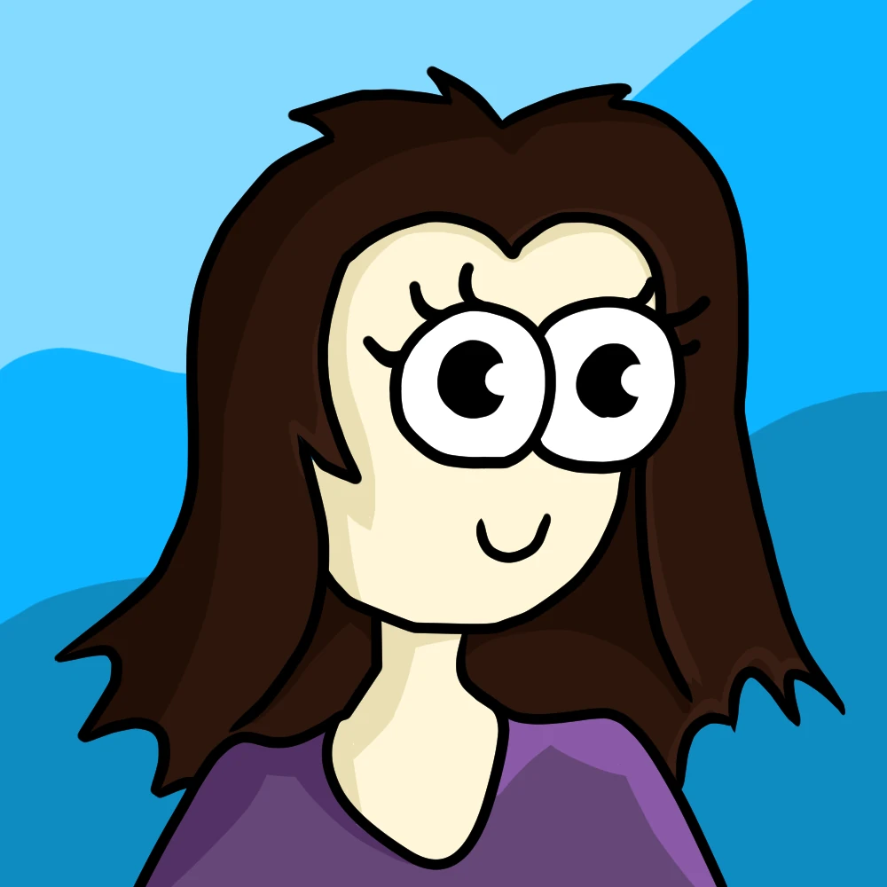

Svojeglav grafični oblikovalec. Obožujem ustvarjanje novih vsebin in preizkušanje lastnih sposobnosti. Občasen urejevalec videoposnetkov, povprečen šaljivec. Izjemno rad bere stripe (ta temne še najbolj).

Povprečen 23-letnik. Se zanimam za grafično oblikovanje, video montažo in fotografijo. Kronični odlašalec obveznosti. V prostem času igram računalniške igre, kitaro in se družim s kolegi. Uživam v sprehodih v naravi in riževih torticah.

Sem Janja, študentka Medijski komunikacij 1. letnika programa MK, na 2. stopnji. Ko se ne pripravljam za fakulteto izkoristim čas, da grem v naravo, se družim s prijatelji in uživam ob domačem ustvarjanju. Še posebej me zanimajo glasba, filmska industrija in slikarstvo, v sebi pa nosim tudi veselje do mode in oblikovanja.